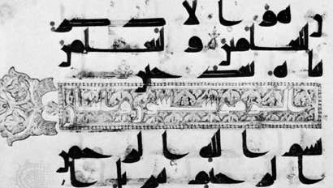
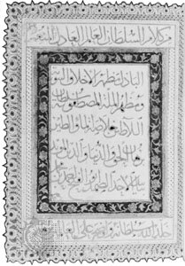
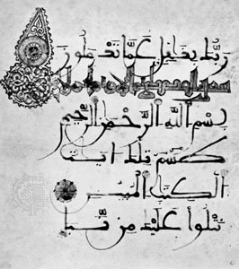
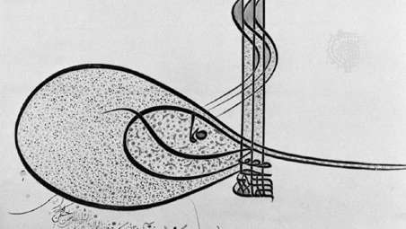
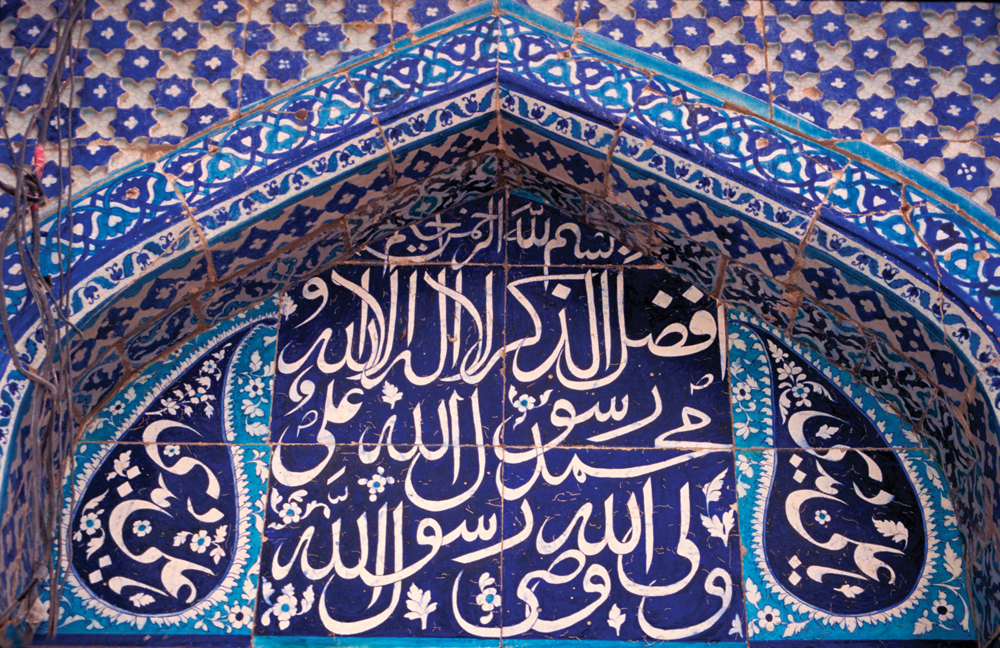

In the 7th and 8th centuries CE the Arab followers of Muhammad conquered territories stretching from the shores of the Atlantic to Sindh (now in Pakistan). Besides spreading the religion of Islam, the conquerers introduced written and spoken Arabic to the regions under their control. The Arabic language was a principal factor in uniting peoples who differed widely in ethnicity, language, and culture. In the early centuries of Islam, Arabic not only was the official language of administration but also was and has remained the language of religion and learning. The Arabic alphabet has been adapted to the Islamic peoples’ vernaculars just as the Latin alphabet has been in the Christian-influenced West.
The Arabic script was evolved probably by the 6th century CE from Nabataean, a dialect of Aramaic current in northern Arabia. The earliest surviving examples of Arabic before Islam are inscriptions on stone.
Arabic is written from right to left and consists of 17 characters, which, with the addition of dots placed above or below certain of them, provide the 28 letters of the Arabic alphabet. Short vowels are not included in the alphabet, being indicated by signs placed above or below the consonant or long vowel that they follow. Certain characters may be joined to their neighbours, others to the preceding one only, and others to the succeeding one only. When coupled to another, the form of the character undergoes certain changes.
These features, as well as the fact that there are no capital forms of letters, give the Arabic script its particular character. A line of Arabic suggests an urgent progress of the characters from right to left. The nice balance between the vertical shafts above and the open curves below the middle register induces a sense of harmony. The peculiarity that certain letters cannot be joined to their neighbours provides articulation. For writing, the Arabic calligrapher employs a reed pen (qalam) with the working point cut on an angle. This feature produces a thick downstroke and a thin upstroke with an infinity of gradation in between. The line traced by a skilled calligrapher is a true marvel of fluidity and sensitive inflection, communicating the very action of the master’s hand.
Broadly speaking, there were two distinct scripts in the early centuries of Islam: cursive script and Kūfic script. For everyday purposes a cursive script was employed: typical examples may be seen in the Arabic papyri from Egypt. Rapidly executed, the script does not appear to have been subject to formal and rigorous rules, and not all the surviving examples are the work of professional scribes. Kūfic script, however, seems to have been developed for religious and official purposes. The name means “the script of Kūfah,” an Islamic city founded in Mesopotamia in 638 CE, but the actual connection between the city and the script is not clear. Kūfic is a more or less square and angular script. Professional copyists employed a particular form for reproducing the earliest copies of the Qurʾān that have survived. These are written on parchment and date from the 8th to the 10th century. They are mostly of an oblong as opposed to codex (i.e., manuscript book) format. The writing is frequently large, especially in the early examples, so that there may be as few as three lines to a single page. The script can hardly be described as stiff and angular; rather, the implied pace is majestic and measured.

Kūfic went out of general use about the 11th century, although it continued to be used as a decorative element contrasting with those scripts that superseded it. About 1000 a new script was established and came to be used for copying the Qurʾān. This is the so-called naskhī script, which has remained perhaps the most popular script in the Arab world. It is a cursive script based on certain laws governing the proportions between the letters. The two names associated with its development are Ibn Muqlah and Ibn al-Bawwāb, both of whom lived and worked in Mesopotamia. Of the latter’s work a single authentic example survives, a manuscript of the Qurʾān in the Chester Beatty Library, Dublin.

Distinctive scripts were developed in particular regions. In Spain the maghribī (“western”) script was evolved and became the standard script for Qurʾāns in North Africa. Derived ultimately from Kūfic, it is characterized by the exaggerated extension of horizontal elements and of the final open curves below the middle register.

Both Persia and Turkey made important contributions to calligraphy. In these countries the Arabic script was adopted for the vernacular. The Persian scribes invented the taʿlīq script in the 13th century. The term taʿlīq means “suspension” and aptly describes the tendency of each word to drop down from its preceding one. At the close of the same century, a famous calligrapher, Mīr ʿAlī of Tabriz, evolved nastaʿlīq, which, according to its name, is a combination of naskhī and taʿlīq. Like taʿlīq, this is a fluid and elegant script, and both were popularly used for copying Persian literary works.
A characteristic script developed in Ottoman Turkey was that used in the chancellery and known as divani. This script is highly mannered and rather difficult to read. Peculiar to Turkish calligraphy is the tuğra (ṭughrā), a kind of royal cipher based on the names and titles of the reigning sultan and worked into a very intricate and beautiful design. A distinctive tuğra was created for each sultan and affixed to imperial decrees by a skilled calligrapher, the neshanı.

There has always existed in the Islamic world a keen appreciation of fine handwriting, and, from the 16th century, it became a practice to assemble in albums specimens of penmanship. Many of these assembled in Turkey, Persia, and India are preserved in museums and libraries. Calligraphy, too, has given rise to quite a considerable literature such as manuals for professional scribes employed in chancelleries.
In its broadest sense, calligraphy also includes the Arabic scripts employed in materials other than parchment, papyrus, and paper. In religious buildings, verses from the Qurʾān were inscribed on the walls for the edification of the faithful, whether carved in stone or stucco or executed in faience tiles. Religious invocations, dedications, and benedictory phrases were also introduced into the decoration of portable objects. Generally speaking, there is a close relationship between these and the scripts properly used on the conventional writing materials. It was often the practice for a skilled penman
